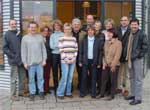
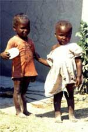

|
|
Donnerstag, 30.01.2003 - 14:24:44
|
|
Großzügige Spende für hungernde Kinder im südlichen Afrika
|
|
 |
| Nach einem gemütlichen Frühstück im sympathischen Bistro Böhmer übergibt Juniorchef Peter Böhmer zahlreichen Mitarbeiterinnen und Mitarbeitern der Arbeitsgruppe die diesjährige Spende für Projekte im südlichen Afrika. |
Bereits seit acht Jahren unterstützt Brezel-Böhmer aus Kupenheim die Kinderhilfsorganisation terre des hommes Murgtal / Mittelbaden. Aus diesem Grund entschlossen sich Ernst, Michael und Peter Böhmer, auch dieses Jahr, anstatt eines kleinen Weihnachtsgeschenks an ihre Kunden ein Projekt von terre des hommes zu fördern.
Durch diesen Verzicht und durch Sachspenden der Brezel-Bäckerei konnten die Kuppenheimer Geschäftsleute bisher die stattliche Summe von rund 10.000 Euro Projektpartnern von terre des hommes zukommen lassen.
Mit 750 Euro hilft Brezel-Böhmer den hungernden Kindern in Afrikas Süden. Die Hungersnot im Süden Afrikas spitzt sich immer mehr zu: 14 Millionen (die Hälfte der Betroffenen sind Kinder) leiden unter den Folgen der Dürre. Die Unterernährung hat für sie besonders fatale Folgen: Die Widerstandskräfte sind geschwächt; Krankheiten wie Masern, Malaria und AIDS breiten sich schnell aus.
Zudem mussten viele Kinder miterleben, wie ihre Familien an der Not zerbrechen. Viele Kinder kämpfen als Bettler auf den Straßen ums Überleben, statt zur Schule zu gehen. So geraten sie in einen Teufelskreis der Armut.
terre des hommes leistet Hilfe (Verteilen von Nahrungsmitteln, Aufbau einer dauerhaften Versorgung) für Not leidende Kinder in Zimbabwe, Sambia und Mosambik.
Konto: Nr: 120 790
Sparkasse Gaggenau-Kuppenheim
BLZ 665 512 90
|
|
Donnerstag, 30.01.2003 - 13:55:11
|
|
Immer ganz Dame geblieben - Dagmar Berghoff feierte 60. Geburtstag
|
Mehr als zwei Jahrzehnte war sie das perfekte Aushängeschild der „Tagesschau", seriös, diszipliniert und stets charmant. „Von „Miss Tagesschau" avancierte Dagmar Berghoff zu Deutschlands Nachrichtenlady. Am 25. Januar 2003 wurde die ehemalige Chefsprecherin der ARD 60 Jahre alt.
Ihre erste „Tagesschau"-Ausgabe las sie am 16. Juni 1976 um 16 Uhr. Sie war auf Empfehlung von „Tagesschau"-Legende Karl-Heinz Köpke, der sonst gegen Frauen im Nachrichtengewerbe plädierte, vom Südwestfunk zu „ARD aktuell" gestoßen.
Eskapaden waren nie ihre Sache, und ihrem makellosen Image ist Dagmar Berghoff auch nach dem Abschied von der „Tagesschau" am letzten Tag des Jahres 1999 treu geblieben. Frisch frisiert, perfekt geschminkt und elegant erscheint sie bei Hamburgs großen Premieren und Kulturevents und moderiert noch immer mit gewohnter Professionalität Reise- und Musiksendungen in Radio und Fernsehen. Ihr einziges kleines Laster: das Rauchen.
Auch nach ihrem Abschied von der „Tagesschau" wird Dagmar Berghoff noch immer von vielen Leuten auf der Straße erkannt. Ihre große Popularität empfindet sie durchaus als zweischneidig. „Für mich überwiegt aber, dass die Leute mir meistens sehr nett begegnen. Die Schattenseite ist, dass einen viele als Allgemeingut betrachten, da ich über das Fernsehen sozusagen täglich in ihr Wohnzimmer kam. Früher wurde alles kommentiert: die Kleider, die ich trug, meine Frisuren."
Angst vor dem Alter habe sie nicht, betont Dagmar Berghoff, doch an Falten könne sie nun einmal nichts Schönes erkennen. Als es 1997 hämische Schlagzeilen über ein angeblich missglücktes Lifting der Augenpartie -in Wahrheit eine Augenoperation - gab, habe sie sich „furchtbar verletzt" gefühlt.
Keineswegs verkraftet hat sie den Tod ihres Mannes im Jahre 2001. „Darüber möchte ich nicht sprechen", wehrt sie jede Frage ab. Lieber spricht sie über ihr Engagement für das Kinderhilfswerk terre des hommes.
Bei ihren Reisen zu Hilfeprojekten in Südafrika oder Kambodscha wurde Berghoff mit großem Leid und Armut konfrontiert. „Das Schlimme ist dieses Gefühl der Ohnmacht, weil man immer nur wenigen helfen kann. Aber es ist besser, aktiv zu werden, als den Kopf in den Sand zu stecken oder in Tränen auszubrechen."
|
|
Samstag, 25.01.2003 - 17:26:42
|
|
Holzbau Hurrle spendet abermals 1.000 Euro für Projekte in Südafrika
|
Seit Monaten warnen die Hilfsorganisationen: Im südlichen Afrika droht eine schwere Hungersnot. Inzwischen ist die Katastrophe längst Realität, doch erst langsam nimmt die internationale Öffentlichkeit Notiz vom Elend der Menschen.
In den Ländern des südlichen Afrika sind insgesamt 14 Millionen von den Auswirkungen einer verheerenden Dürre betroffen. Die Hälfte der vom Hunger Bedrohten sind Kinder. Die Unterversorgung mit Nahrungsmitteln schwächt die Abwehrkräfte der Menschen und bringt somit auch eine Zunahme ansteckender Krankheiten wie Masern, Cholera, Malaria und Aids mit sich.
Überwindung der Armut - die Projekte von terre des hommes
Dürre, Ungerechter Welthandel und die örtliche Misswirtschaft sind die Ursachen dieser Katastrophe. Terre des hommes beschränkt sich in seiner Hilfe nicht alleine auf Nahrungsmittellieferungen. Ebenso wichtig ist die Forderung nach gerechten Wirtschafts- und Handelsbedingungen für Afrika, aber auch nach Demokratie und Rechtstaatlichkeit in den Ländern selbst.
Nachhaltige Programme geben Kindern eine Zukunft
Notwendig sind außerdem Programme, die den Menschen nachhaltig helfen: Terre des hommes unterstützt Familien im ländlichen Zimbawe mit Kleinkrediten beim Aufbau einer Existenz. Aidswaisen in Sambia erhalten Ausbildung und Betreuung. Kleinbauern in Mosambik werden bei der Einführung von dürreresistentem Saatgut beraten. So leistet terre des hommes gemeinsam mit seinen Partnern einen Beitrag zur Überwindung des Hungers.
Die großzügige Spende (1.000 Euro, wie im vergangenen Jahr) der Firma Holzbau Hurrle aus Gaggenau unterstützt die afrikanischen Projektpartner unserer Arbeitsgruppe.
Foto: Ulrike Dinger (links) bei der Spendenübergabe an Eva Hahn und Heinz Wolf von terre des hommes Murgtal / Mittelbaden.
|
|
Samstag, 25.01.2003 - 17:16:34
|
|
tdh-Wettbewerb für junge Journalisten
|
terre des hommes Deutschland e.V. hat vor einigen Wochen einen Textwettbewerb für junge Journalisten ausgeschrieben. Bis zum 30.9.2002 konnten journalistische Beträge zum Thema "Kinderrechte" eingereicht werden. Der Wettbewerb wurde in Kooperation mit dem "Reise Journal" der WAZ-Mediengruppe durchgeführt.
Als Preis für den besten Beitrag wurde eine zweiwöchige Recherchereise auf die Philippinen ausgelobt. Während der Recherchereise bestand die Möglichkeit, terre des hommes-Kinderrechtsprojekte zu besuchen und Projektpartner zu interviewen. Im Wettbewerbspreis enthalten war auch die Veröffentlichung der Reportage im Reise Journal der WAZ-Mediengruppe.
"Kindheit im Kampf" lautet der Titel eines preisgekrönten Artikels, den wir hier ausschnittsweise zeigen möchten:
 "Was sie uns angetan haben, ist ein Verbrechen. Sie haben das schlimmste Verbrechen verübt, das es auf der Welt gibt. Indem sie uns zu jungen Soldaten machten, haben sie uns unsere Kindheit genommen. Und sie können sie uns nicht zurückgeben." "Was sie uns angetan haben, ist ein Verbrechen. Sie haben das schlimmste Verbrechen verübt, das es auf der Welt gibt. Indem sie uns zu jungen Soldaten machten, haben sie uns unsere Kindheit genommen. Und sie können sie uns nicht zurückgeben."
Es ist still im Saal. Eine halbe Stunde nur hat China Keitetsi aus ihrer Vergangenheit erzählt und doch alle Anwesenden damit in ihren Bann geschlagen. Die Grausamkeiten, die sie im Bürgerkrieg von Uganda erlebt hat, waren kaum vorstellbar.
Im Alter von neun Jahren haben die Rebellenkämpfer die heute 26-Jährige aufgegriffen. "Sie nahmen mir die Mutter und gaben mir ein Gewehr", sagt sie heute darüber. Das ist auch der Titel des Buches, das sie jetzt veröffentlicht hat. Es ist das erste Mal, dass eine ehemalige Kindersoldatin ihre Situation schriftlich festhält. Entstanden ist die Autobiographie in den Nächten, in denen sie, von den Geschehnissen ihrer Vergangenheit überwältigt, nicht schlafen konnte. (Svenja Bergt)
Den kompletten Beitrag kann man hier nachlesen:
Kindheit im Kampf
Alle Beiträge des Journalistenwettbewerbs:
Junge Journalisten zum Thema "Kinderrechte"
|
|
Dienstag, 14.01.2003 - 23:38:35
|
|
Rückblick auf erfolgreiches Jahr 2002 / Vorschau 2003
|
Sehr erfolgreich ging das Jahr 2002 für unsere Arbeitsgruppe zu Ende. Im Durchschnitt organisierte unser Team alle 2 Monate eine Veranstaltung - so konnten wir zahlreiche Projekte von terre des hommes finanziell unterstützen und vielen Kindern und Familien in der Dritten Welt helfen.
Alljährliche Höhepunkte waren auch im Jahr 2002 wieder das Kinderfest und der Herbstbasar mit Kunstmarkt. Durch diese Aktionen und insbesondere durch die Anfang 2002 gestartete Spendenaktion für Afghanistan kamen schätzungsweise über 100.000 Euro an Erlösen zusammen. Die detaillierten Zahlen erhalten wir in wenigen Wochen. Dann werden wir - analog zum Jahresergebnis 2001 - ausführlich über die Zahlen informieren.
In der Rubrik "Presse" können Sie sich mit dem Jahresrückblick 2002 einen guten Überblick über unsere Aktivitäten verschaffen.
In der rechten Spalte (auf jeder Seite) haben wir übrigens die Entwicklung der Erlöszahlen von 1993 bis 2001 dokumentiert.
Bereits fest eingeplante Aktivitäten für 2003 sind:
- Radbörse in Kuppenheim (15.03.)
- Jubiläumsabschluss-Konzert im neuen Rathaus Kuppenheim (29.03.)
- Serenaden-Konzert beim Schloss Favorite (Förch bei Rastatt) (17.05.)
- Kinderfest in Kuppenheim (14.09.)
- Basar in Kuppenheim (16.11.)
|
|
|
|
 Ansprechpartner Ansprechpartner
|
|
Wolfgang Deppisch
(Projektinfos)
Tel. 07222 / 32927
Heinz Wolf
(Sponsoring, Allgemeines)
Tel. 07225 / 75543
weitere Ansprechpartner
|
|
Erlöse
1992-2012
|
|

Jahr |
Euro |
1992 |
70.000 |
1993 |
75.600 |
1994 |
83.883 |
1995 |
69.617 |
1996 |
51.412 |
1997 |
61.749 |
1998 |
60.333 |
1999 |
68.742 |
2000 |
85.492 |
2001 |
106.375 |
2002 |
78.937 |
2003 |
84.027 |
2004 |
76.662 |
2005 |
149.941 |
2006 |
84.497 |
2007 |
105.958 |
2008 |
104.053 |
2009 |
100.833 |
2010 |
107.254 |
2011 |
103.600 |
| 2012 |
158.250 |
| 2013 |
163.420 |
1977-2013 |
mehr als 2,7 Mio. € |
|
Detailansicht der Erlöszahlen |
|
|


;)
;)
;)